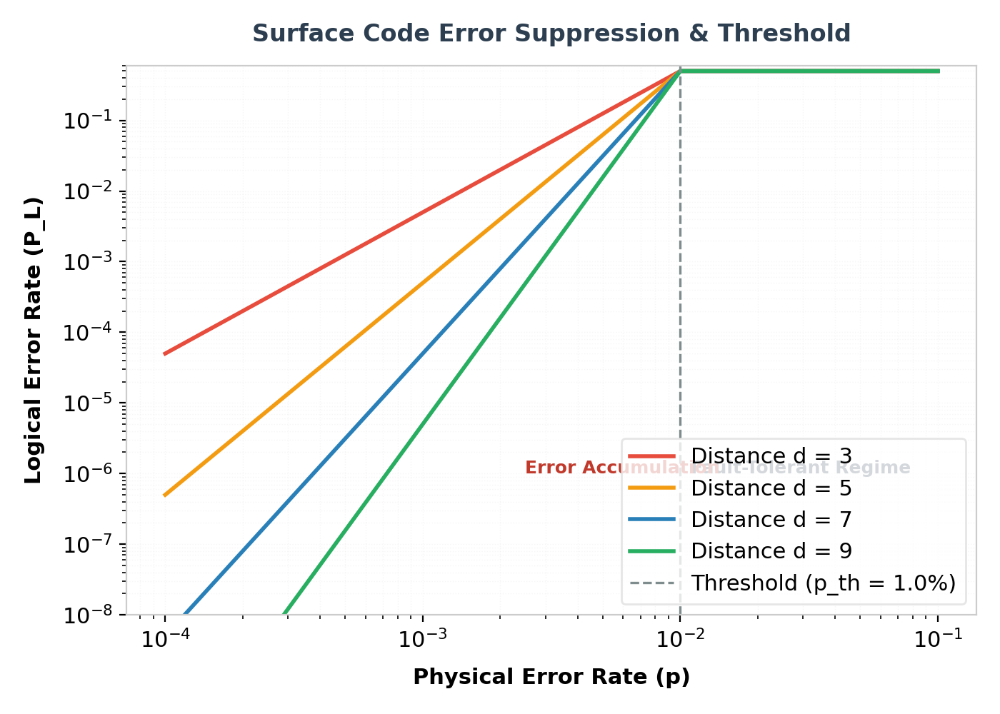

Building a useful quantum computer is one of the grandest scientific and engineering challenges of our time. While physical quantum platforms such as superconducting loops, trapped ions, and silicon spins continue to mature, they all share a fundamental weakness: noise. Environmental interactions, thermal fluctuations, and control inaccuracies cause physical qubits to decohere, introducing errors that corrupt quantum information.
To overcome this barrier, we must use Quantum Error Correction (QEC). QEC enables us to protect fragile quantum information by encoding a single "logical" qubit into a large grid of physical qubits. Among the various proposed QEC schemes, the surface code stands out as the most promising framework for practical, large-scale quantum computers.
"Surface codes offer a remarkably high error threshold (~1%), requiring only nearest-neighbor 2D physical connectivity, making them the standard architecture for modern superconducting QPUs."
Stabilizer Measurements in a 2D Array
The surface code operates on a 2D square lattice of physical qubits. These physical qubits are divided into two distinct categories:
- Data Qubits: Qubits that store the actual superposition states of the logical qubit.
- Measure (Syndrome) Qubits: Auxiliary qubits used solely to detect errors without destroying the stored quantum state.
By continuously measuring 4-qubit operators known as stabilizers, we can detect when an X (bit-flip) or Z (phase-flip) error occurs. Specifically, we measure:
1. Z-stabilizers (measuring phase errors on neighboring data qubits)
2. X-stabilizers (measuring bit-flip errors on neighboring data qubits)
The Threshold Theorem & Code Scaling
The primary metric for any QEC code is its threshold. The threshold represents the physical error rate below which the logical error rate decreases exponentially as we increase the size of the physical grid (the code distance d).
For the surface code, the fault-tolerance threshold is approximately 1.0%. If the physical error rate of the hardware is below this threshold, we can achieve arbitrarily low logical error rates by scaling the code distance, enabling algorithms that require millions or billions of gate operations.

How Code Distance Impacts Overhead
The code distance d dictates the size of the physical grid. A logical qubit of distance d requires a grid of d × d data qubits and d² - 1 measure qubits, totaling 2d² - 1 physical qubits. The table below outlines the physical qubit requirements for various distances:
| Code Distance (d) | Data Qubits | Measure Qubits | Total Physical Qubits | Error Protection (t) |
|---|---|---|---|---|
| 3 | 9 | 8 | 17 | 1 error |
| 5 | 25 | 24 | 49 | 2 errors |
| 7 | 49 | 48 | 97 | 3 errors |
| 9 | 81 | 80 | 161 | 4 errors |
Stim-Based Surface Code Simulation
In modern quantum engineering, we simulate surface codes programmatically to test decoding pipelines under realistic noise. The following Python code shows how to construct a distance-3 surface code stabilizer measurement circuit using Stim:
import stim
# Generate a surface code circuit with Stim
def generate_d3_surface_code():
# Construct a distance 3 surface code circuit with 1 round of noise
circuit = stim.Circuit.generated(
code_task="surface_code:rotated_memory_z",
distance=3,
rounds=3,
after_clifford_depolarization=0.001, # 0.1% depolarizing noise
after_reset_flip_probability=0.001,
before_measure_flip_probability=0.001
)
return circuit
# Compile the circuit and count detectors
circuit = generate_d3_surface_code()
print(f"Number of physical qubits: {circuit.num_qubits}")
print(f"Number of detector measurements: {circuit.num_detectors}")
print(f"Number of logical observables: {circuit.num_observables}")
# Sample syndrome data
sampler = circuit.compile_detector_sampler()
syndromes, logical_errors = sampler.sample(shots=10, separate_observables=True)
print("Sampled syndromes (shots x detectors):")
print(syndromes)
Using this circuit, a classical decoder processes the syndrome measurements to identify the most likely physical errors. Advanced decoders like Minimum Weight Perfect Matching (MWPM) or Belief Propagation (BP) are used to perform this decoding in real time, a critical capability for scaling to millions of physical qubits.